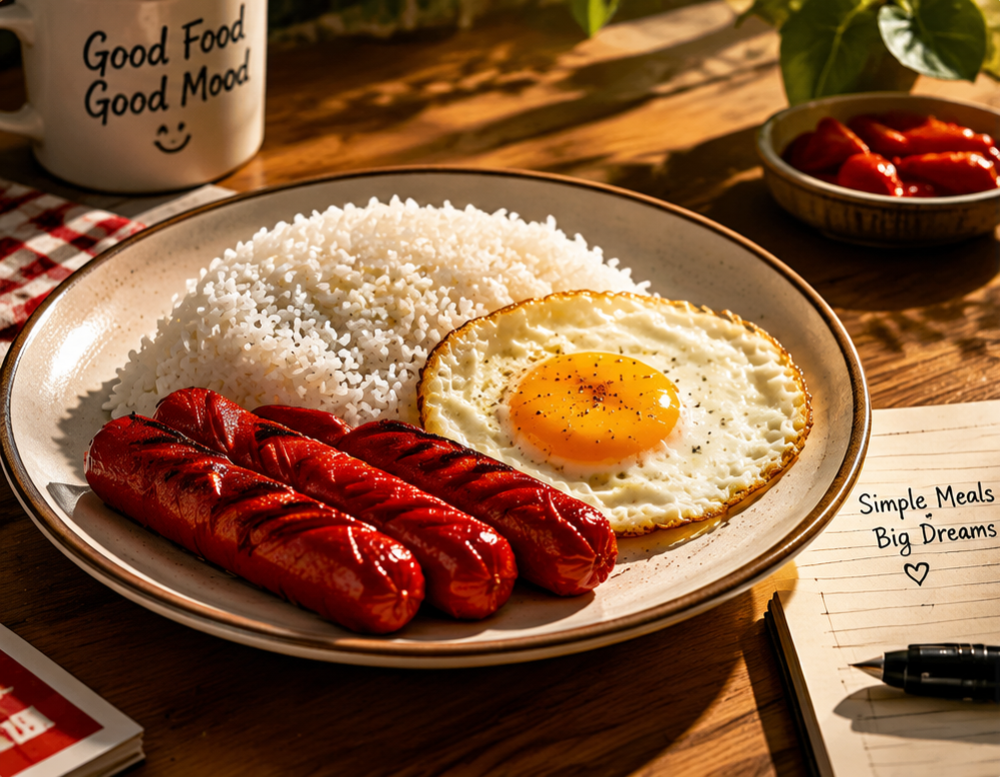
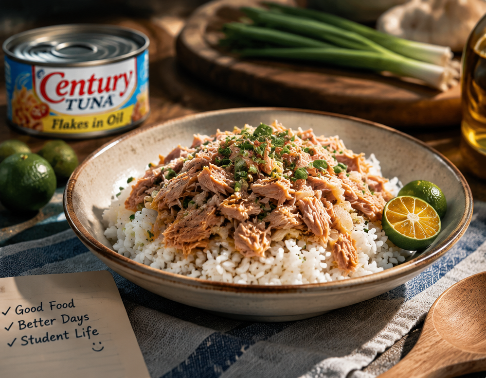

Hotdog at Itlog: The Ultimate Comfort
Why tender juicy hotdogs paired with warm rice and a sunny-side-up egg remain the undisputed king of quick student meals.
Mabilis, Mura, at Masarap: Ang Survival Food Guide ng Estudyanteng Pinoy
Welcome to Gipit Eats, your go-to place for easy, delicious, and affordable meals! We believe that good food doesn't have to be expensive. Our website offers budget-friendly recipes, simple cooking guides, and meal-planning tips to help you save money. You can also share your own recipes and inspire others to cook. At Gipit Eats, we make every meal simple, tasty, and sulit sa budget!
Enter your meal budget below to see what you can cook today!

Why tender juicy hotdogs paired with warm rice and a sunny-side-up egg remain the undisputed king of quick student meals.

Straight from the can or sautéed with onions and garlic: how canned tuna saves time and money during exam week.